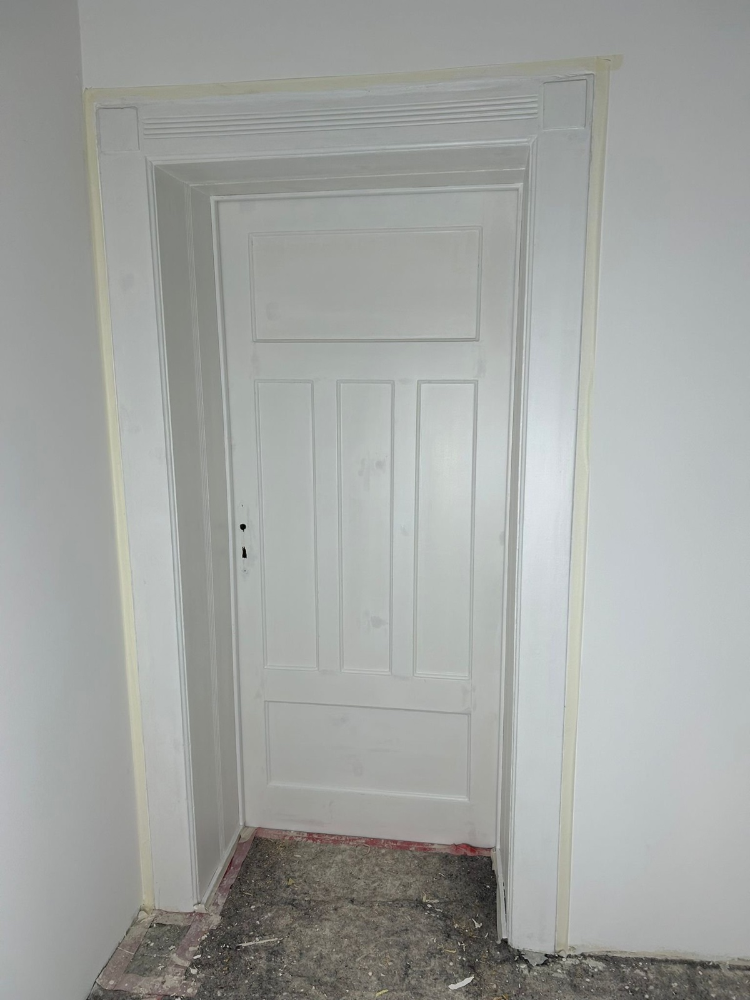

Türen & Zargen
Farblich abgestimmte Türen und Rahmen sorgen für ein stimmiges Gesamtbild. Wir besprechen Farbton, Glanzgrad und den Zustand der vorhandenen Beschichtung.
MEL MALER · LACKIERARBEITEN
Türen, Fenster und Möbel prägen einen Raum genauso wie seine Wände. Mit passenden Lackierungen geben wir vorhandenen Oberflächen ein gepflegtes Aussehen.
Lackierarbeiten anfragen ↗
WAS WIR FÜR SIE TUN
Wir stimmen die Arbeiten auf Ihre Räume, Ihre Wünsche und die Gegebenheiten vor Ort ab.
Farblich abgestimmte Türen und Rahmen sorgen für ein stimmiges Gesamtbild. Wir besprechen Farbton, Glanzgrad und den Zustand der vorhandenen Beschichtung.
Wir prüfen, welche Vorbereitung und welcher Anstrich zu Ihren Holzelementen passen. Bestehende Beschichtungen und die Beanspruchung spielen dabei eine wichtige Rolle.
Nicht jede Oberfläche braucht einen Austausch. Gemeinsam klären wir, ob eine Aufarbeitung und Lackierung für Ihr Möbelstück oder Metallelement sinnvoll ist.
Vergilbte Heizkörper wirken schnell unruhig. Mit hitzebeständigem Lack bekommen sie wieder eine frische Oberfläche.
Metall braucht die richtige Vorbereitung: Rost entfernen, grundieren und dann lackieren – für eine langlebige Oberfläche.
Fensterläden, Zäune und Holzverkleidungen sind Wind und Wetter ausgesetzt. Wir beraten Sie zu witterungsbeständigen Systemen.
INTERAKTIVLACK-PLANER
Wählen Sie Objekt, Zustand, Glanzgrad und Farbton – die Vorschau zeigt die Wirkung, der Planer die passenden Arbeitsschritte.
–
Allgemeine Arbeitsschritte zur Orientierung. Welches Lacksystem passt, hängt von Untergrund und Altbeschichtung ab und wird vor Ort geprüft. Farben und Glanz wirken am Bildschirm anders als in der Realität.
Ergebnis als Anfrage übernehmen ↗AUS UNSEREN PROJEKTEN
Lackierarbeiten von MEL – sorgfältig vorbereitet, sauber ausgeführt.
SO LÄUFT ES AB
Welche Türen, Fenster oder Heizkörper – und wie ist die vorhandene Beschichtung?
Alte Beschichtung vorbereiten, Fehlstellen ausbessern, entstauben.
Passende Grundierung oder Haftgrund je nach Untergrund.
Zwischenschliff und Schlusslack für eine glatte, gleichmäßige Oberfläche.
GUT VORBEREITET
Schicken Sie uns Fotos und nennen Sie Material, Anzahl und ungefähre Maße. Informationen über vorhandene Lackierungen helfen bei der ersten Einschätzung.
Den genauen Umfang und die Kosten klären wir nach der Besprechung Ihres Vorhabens. Sie müssen zum ersten Kontakt noch nicht alle Details kennen.
Vorhaben besprechen ↗HÄUFIGE FRAGEN
Das hängt vom Material, Zustand und bisherigen Anstrich ab. Wir prüfen zuerst, welche Vorbereitung nötig ist und ob sich die Lackierung für das gewünschte Ergebnis eignet.
Wir besprechen matte, seidenmatte oder glänzende Oberflächen im Zusammenhang mit Material und Nutzung. Nicht jedes Produkt ist für jeden Einsatzzweck geeignet.
Trocknung und vollständige Aushärtung sind unterschiedlich. Wir informieren Sie passend zum verwendeten Material darüber, wann und wie die Oberfläche wieder genutzt werden kann.
Oft ja. Ob Türblätter ausgehängt oder vor Ort lackiert werden, hängt von Objekt und Zustand ab – das besprechen wir vorab.
Seidenmatt ist ein beliebter Allrounder. Matt wirkt ruhiger, glänzende Lacke sind besonders strapazierfähig. Im Lack-Planer oben sehen Sie den Unterschied.
DER NÄCHSTE SCHRITT